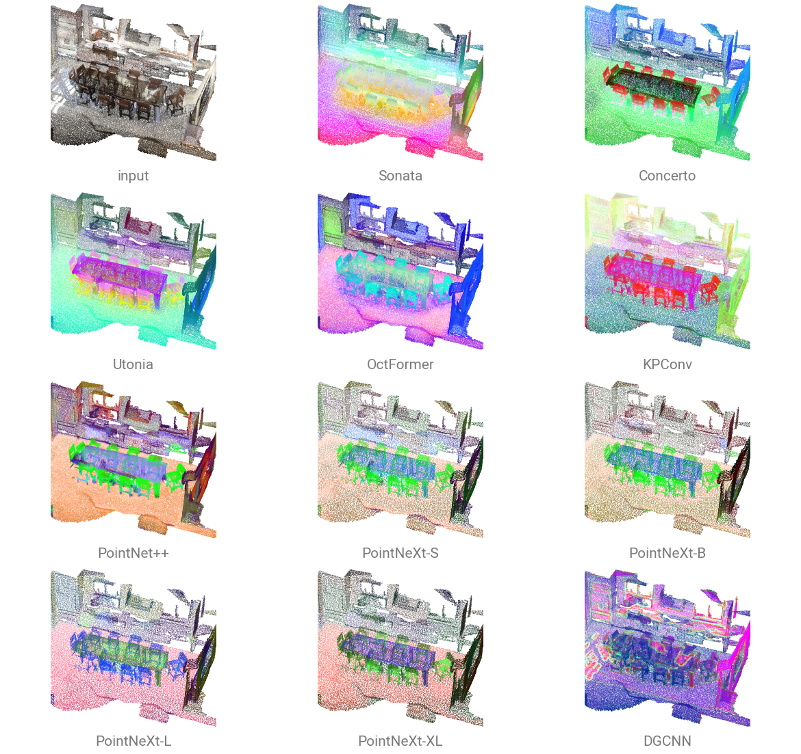
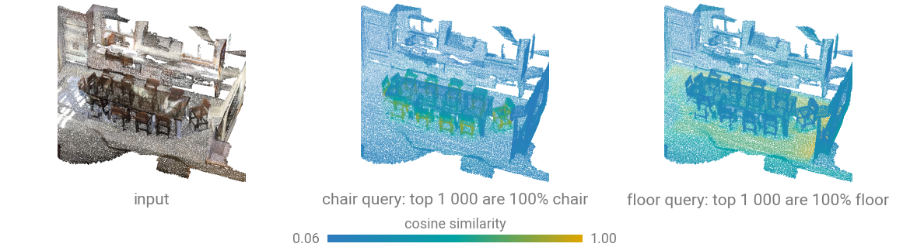
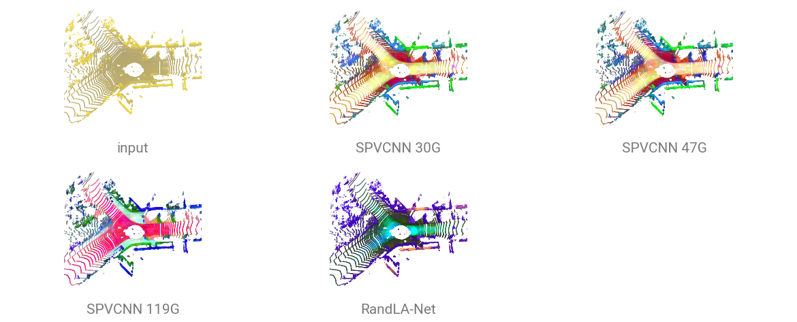
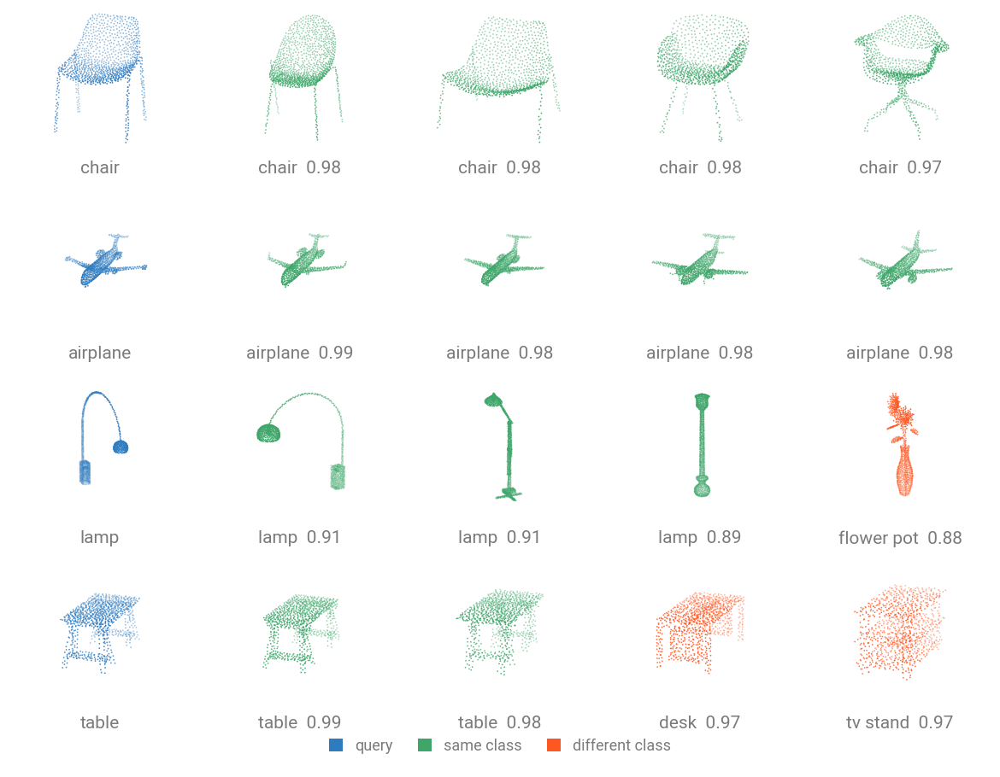

Feature Maps¶
Open in Colab · Download notebook
All registered models compute a representation (embeddings, feature maps, descriptors) that you can use for downstream tasks: clustering, retrieval, or visualizing what the model learned.
Segmentation backbones return a per-point \((N, C)\) tensor; classifiers return a global descriptor \((B, C)\).
Every classification and segmentation model follows the same contract: build it with num_classes=0 (or call reset_classifier(0)) and forward returns those features instead of logits, model.num_features is their width \(C\), and forward_head(..., pre_logits=True) returns the same tensor on a model that still has its head. The encoder alone is available through forward_features.
Detection models keep the same vocabulary without a headless mode: forward_features returns the backbone map at its own resolution (a BEV map \((B, C, H, W)\) for pillar and voxel detectors, a sparse voxel tensor for VoxelNeXt, packed per-point or per-seed features for the point-based ones) and model.num_features is its channel count \(C\).

Per-point features from a pretrained encoder¶
Self-supervised encoders are trained without labels, so their features are not shaped by one dataset's class list. For example, concerto-large-lp.scannet20.pointcept carries a frozen Concerto encoder.
The example reads one room of the ScanNet20 validation set. ScanNet requires a signed agreement: request it on its download page and extract it under data/ScanNet/raw/.
import torch
import torch_pointcloud as tp
from torch_pointcloud.datasets import ScanNet20
from torch_pointcloud.utils.data import collate
# Load the pretrained model
model, info = tp.create_model(
"concerto-large-lp.scannet20.pointcept",
task="segmentation",
pretrained=True,
return_info=True,
)
model = model.cuda().eval()
# Load one room, preprocessed by the checkpoint's transform
dataset = ScanNet20(root="data", split="val", transform=info["transform"])
sample = dataset[0]
data = collate([sample])
with torch.inference_mode():
feat, _, _, intermediates = model.forward_features(
data["x"].cuda(),
data["pos_grid"].cuda(),
data["batch"].cuda(),
return_intermediates=True,
)
print("encoder ", tuple(feat.shape))
feat, _, _ = model.forward_decoder(feat, intermediates)
print("per point ", tuple(feat.shape))
# encoder (972, 768)
# per point (164614, 1728)
The encoder pools the room down to 964 tokens. The decoder unpools them back to one feature per voxelized point and concatenates every scale, so \(C\) grows to 1728. intermediates holds the finer encoder stages, fine to coarse, as FeaturesDict entries (x, pos_grid, batch, plus the pooling map the decoder unpools with).
Visualize features with PCA¶
Project each feature onto its top principal components and read three of them as RGB. Points with similar features get similar colors, and no label is involved.
import torch
def pca_color(feat: torch.Tensor, brightness: float = 1.2) -> torch.Tensor:
"""Map a per-point feature (N, C) to RGB via its top components."""
_, _, v = torch.pca_lowrank(feat, center=True, q=6, niter=5)
proj = feat @ v
proj = proj[:, :3] * 0.6 + proj[:, 3:6] * 0.4
lo, hi = proj.min(0, keepdim=True)[0], proj.max(0, keepdim=True)[0]
return ((proj - lo) / (hi - lo).clamp_min(1e-6) * brightness).clamp(0, 1)
rgb = pca_color(feat)
print(f"RGB: {rgb.shape}, min: {rgb.min()}, max: {rgb.max()}")
# RGB: torch.Size([114118, 3]), min: 0.0, max: 1.0
import matplotlib.pyplot as plt
def show_cloud(cloud, title, point_size=3.0):
_, ax = plt.subplots(1, 1, figsize=(4.2, 4.0), subplot_kw={"projection": "3d"})
pos = np.asarray(cloud["pos"])
ax.scatter(*pos.T, c=np.asarray(cloud["color"]), s=point_size, linewidths=0, depthshade=False)
ax.set_box_aspect(np.ptp(pos, axis=0))
ax.set_title(title, fontsize=10)
ax.set_axis_off()
plt.show()
color = rgb.cpu()[data["inverse"]].numpy()
show_cloud({"pos": pos, "color": color}, "PCA color")
Query a scene with cosine similarity¶
Normalize the features, pick one point, and take its dot product against every other point.
import torch.nn.functional as F
# the checkpoint voxelizes, so compare against the labels the model actually saw
segment = data["segment"].cuda()
feat = F.normalize(feat.float(), dim=-1)
query = 72_863 # a point on a chair
similarity = feat[query] @ feat.t() # (N,) in [-1, 1]
top = similarity.topk(1000).indices
print((segment[top] == segment[query]).float().mean())
# tensor(1., device='cuda:0')

On the sample room, the 1000 nearest neighbors of that chair point are 100% chair, and those of a floor point are 98.8% floor. The encoder never saw a label; points on the same object share a feature. This is nearest-neighbor label transfer: annotate one point, propagate to the region.
Outdoor LiDAR¶
The same steps on a SemanticKITTI scan, with the SPVCNN compute ladder and RandLA-Net. The input panel is colored by height, as a LiDAR scan carries intensity rather than RGB.

Road, sidewalk, vegetation and parked cars separate in feature space.
All panels share one frame: each backbone's coordinate convention (voxel-grid integers, a normalized cube) is scaled onto the scene's extent for display. PCA is fit per panel, so colors are comparable inside a panel, not across panels.
Retrieve shapes: global descriptors¶
A classifier with its head removed is a shape encoder. Embedding ModelNet40's test split and classifying each object by its nearest neighbor recovers most of the supervised accuracy.
import torch
import torch.nn.functional as F
from tqdm import tqdm
import torch_pointcloud as tp
from torch_pointcloud.datasets import ModelNetNormalResampled
from torch_pointcloud.utils.data import PointCloudDataLoader
from torch_pointcloud.config import DATA_DIR
model, info = tp.create_model(
"pointnet2-ssg.modelnet40.xu-yan",
task="classification",
pretrained=True,
num_classes=0,
return_info=True,
)
model = model.cuda().eval()
dataset = ModelNetNormalResampled(
root=DATA_DIR,
variant="40",
train=False,
transform=info["transform"],
)
dataloader = PointCloudDataLoader(dataset, batch_size=64, num_workers=6)
embeddings, labels = [], []
with torch.no_grad():
for batch in tqdm(dataloader, desc="Embedding"):
embedding = model(None, batch["pos"].cuda(), batch["batch"].cuda()) # (B, model.num_features)
embeddings.append(F.normalize(embedding, dim=-1).cpu())
labels.append(batch["label"])
embeddings, labels = torch.cat(embeddings), torch.cat(labels)
similarity = embeddings @ embeddings.T
similarity.fill_diagonal_(-1)
neighbours = labels[similarity.argmax(dim=1)]
print(f"1-NN retrieval accuracy: {(neighbours == labels).float().mean():.4f}")
